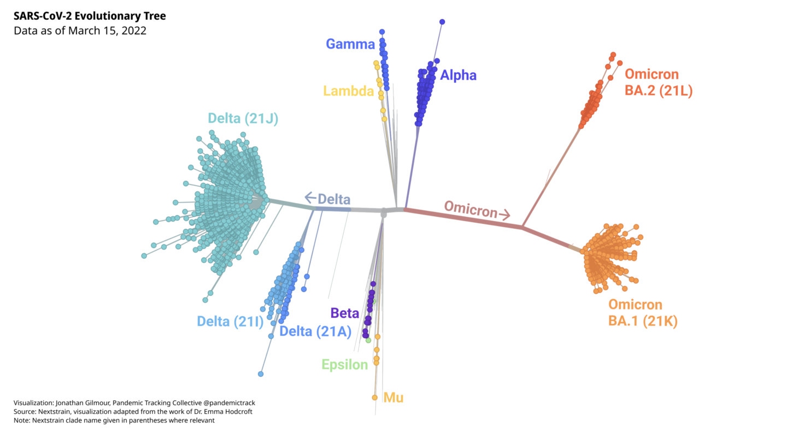

Variants, Sublineages, and Recombinants: The Constantly Changing Genome of SARS-CoV-2
The virus that causes Covid-19 continues to evolve, resulting in a vast array of different forms of the virus. Scientists work to make sense of the changes and track those that may pose a threat.
This piece is originally published at rockefellerfoundation.org/case-study/variants-sublineages-and-recombinants-the-constantly-changing-genome-of-sars-cov-2/
During the course of the Covid-19 pandemic, numerous variants of SARS-CoV-2 have emerged. Some have died out, and some have surged globally. They are all SARS-CoV-2, but they differ in important ways. Think of them as the boughs of the SARS-CoV-2 family tree, each of which has branched off into many smaller limbs. The smaller limbs have, in turn, branched off into even smaller twigs. Looked at from a distance, the SARS-CoV-2 tree may resemble a tangled tumbleweed, but scientists have used powerful genetic tools and bioinformatics to make sense of the viruses and trace how they are related.
When a virus replicates, it makes copies of all of its genes. In the process, it makes mistakes, like typos in the string of 30,000 letters that make up the SARS-CoV-2 genome. Those mistakes may result in changes in the amino acids that make up a protein, altering its structure. Usually, those mistakes, or mutations, make no difference in how the virus functions or may even weaken the virus. Rarely, mutations may make the virus better able to cause disease, spread, or evade immunity. When a population of viruses with the same set of mutations is found in enough hosts, that group is labeled a variant. Going back to the tree analogy, think of variants as distinct branches.
Every time SARS-CoV-2 infects a person and replicates, mutations will occur. In the course of two years, there have been an unimaginable number of opportunities for mutations, with over 470 million documented infections, and likely many more undocumented infections. As long as SARS-CoV-2 continues to spread, it will evolve and new variants will emerge. However, most of them will not end up causing global surges and won’t be any more of a threat than existing variants.
But what about variants carrying these rare mutations that make them more infectious or deadly? Researchers perform genomic surveillance on the virus to monitor its evolution in an effort to identify variants that may pose a threat. Variants that have the potential or demonstrated ability to be much more transmissible, immune evasive, or virulent are closely monitored and may be designated as variants of interest (VOIs), or variants of concern (VOCs). The World Health Organization has designated five variants as VOCs and given them the Greek letter names Alpha, Beta, Gamma, Delta, and Omicron.
Organizing and classifying SARS-CoV-2 viruses has become a huge undertaking.
When researchers sequence samples of SARS-CoV-2, they may submit those sequences to public databases, such as GISAID or GenBank. Careful analysis of these sequences can reveal patterns and trends. Very early in the pandemic, this was a (relatively) simple task. As the pandemic progressed and millions of people became hosts for replicating viruses, the viruses accumulated more and more mutations. The result is a diverse viral population. By June 2020, there were more than 35,000 publicly available sequences, and it became clear that a method to organize and classify these viruses was needed. As of March 23, 2022, there were over 9.6 million sequences submitted to GISAID alone.
Several commonly used naming systems classify the evolving forms of the virus, relying on rules determined by genomics experts to recognize the branches and twigs of the SARS-CoV-2 family tree. The terminology can differ between systems and in media reports, resulting in some confusion.
- A clade or lineage is a group of genetically similar viruses with a common ancestor.
- A sublineage is a group of similar viruses within a lineage.
- A subvariant is a sublineage of a variant, usually referring to a variant of concern.
The most widely used naming systems include Pango and Nextstrain. Although the major lineage and clade assignments correspond in general, systems may group viruses slightly differently, listing different specific mutations as being characteristic of the lineage or clade, for example. Mutations that are known or suspected to affect the variant’s ability to cause disease, spread, or evade immunity are more consistently included. (Unless stated otherwise, Pango lineages will be used here.) The WHO includes all of the sublineages of a lineage within its labels for variants of concern.
Table 1. SARS-CoV-2 Variants designated as Variants of Concern by the WHO are given Greek letter names. Other naming systems use different conventions.
As variants continue to evolve, they may acquire new mutations that have the potential to make them more of a threat. Variant sublineages are derived from variants by acquiring potentially significant additional mutations and these may evolve into genetically distinct forms of a variant that gain a competitive advantage and spread in a population. These subvariants may be monitored separately. The more opportunities a virus has to infect and replicate, the more mutations it will acquire, and the more sublineages it will propagate.
Some mutations or groups of mutations are known to confer an increased ability to persist and spread, and have arisen independently in distinct lineages. In this convergent evolution, viruses with these traits are better able to multiply, and thus can outcompete lineages that do not have such advantages.
As the Delta variant circulated widely, it produced many subvariants.
The Delta variant, which was dominant worldwide between June and December 2021, has over 200 known sublineages. In the summer of 2021, a Delta subvariant, now called AY.1, was detected with an additional mutation that was associated with the ability to evade the immune system. More recently, another sublineage of Delta, called AY.4.2, was detected in at least 42 countries. It had three potentially worrisome mutations and began to increase in prevalence in some areas, although it did not reach very high levels worldwide.
Sublineages of the Delta variant are closely monitored, in part because the “next wave” was expected to arise from the Delta lineage. That expectation proved incorrect.
When the Omicron variant was first sequenced in November 2021, it was found to have an astounding 50 mutations, compared to the original virus sequenced in January 2020. Moreover, genetic analysis revealed that the Omicron lineage had diverged from the other lineages sometime in mid-2020. The origins of such an unusual sequence continue to be a source of much speculation by scientists.
The Omicron variant consists of several major sublineages.
Soon after its discovery, the Omicron variant was shown to have three quite distinct sublineages: BA.1, BA.2, and BA.3. They are, in fact, as different from each other, genetically, as Alpha, Beta, Gamma, and Delta are from each other. The highly transmissible BA.1 sublineage is the sublineage that spread so explosively worldwide. BA.1 is also known as B.1.1.529.1 or Nextstrain clade 21K. The BA.2 sublineage (also known as B.1.1.529.2 or Nextstrain clade 21L) appears to be even more transmissible than BA.1, which it has largely displaced. Another sublineage, BA.1.1, is derived from BA.1, and possesses an additional mutation (S:R345K) that may help it evade immunity. BA.1.1 has grown in prevalence in some areas. BA.2.2, a sublineage of BA.2 with an unusual spike mutation makes up the majority of Omicron samples in Hong Kong, and has also been detected in several other countries.

Diagnostic tests are different from sequencing, but some can identify possible variants.
An interesting feature of Omicron is known as S-Gene Dropout or S-Gene Target Failure (SGTF). Some PCR test kits are designed to detect parts of three different genes in SARS-CoV-2. The first sublineage of Omicron to become dominant globally, BA.1, is missing a part of the spike gene detected by this test, so it gives a negative result on one of the three parts of the test. (The Alpha variant also has this feature, but Alpha is rare now.) SGTF was a quick, inexpensive way to track the Omicron variant as it spread throughout the world. Unlike sequencing, which requires more specialized equipment and trained personnel, the SGTF feature allows diagnostic laboratories to detect possible Omicron cases.
But Omicron’s evolution added a wrinkle. The BA.2 sublineage cannot be tracked using SGTF, since it is not missing the part of the spike gene that gives a negative result. This was not a problem at first, since BA.1 was dominant, but as BA.2 began showing up more frequently, SGTF became less useful. Often misleadingly called the “Stealth Variant” because it lacked the SGTF feature, it is still detected by diagnostic PCR, but cannot be identified as Omicron without sequencing.
The properties of a lineage or sublineage depend on its pattern of mutations.
Each unique combination of mutations in a variant or subvariant may endow it with different properties. Researchers can make predictions based on past epidemiological or laboratory studies but new, unknown mutations, or mutations in new combinations need to be studied to determine their abilities to infect, replicate, and cause disease. This can be a complex matter, and it becomes more complex with each wave of variants that appears. Teasing out a virus’s inherent virulence or transmissibility from its ability to evade the immune response is especially difficult. The ability of a lineage to avoid the immune system depends on the properties of the virus itself, as well as a person’s immune status, including:
- If a person is immunocompromised
- If immunity was induced by a vaccine, or infection, or both
- The vaccine type and number of doses
- The variant responsible for a previous infection
There is also the question of the effectiveness of therapeutic treatments. Monoclonal antibody treatments can be quite effective if they are directed at a susceptible virus. Mutations that change the viral structure—especially the spike protein— can render a previously effective treatment useless. Many of the monoclonal antibody treatments that are effective against the Delta variant, for example, are ineffective against the BA.1 sublineage of Omicron. Unfortunately, sotrovimab, which retains some activity against BA.1, appears to be much less effective against the BA.2 sublineage of Omicron. Recently, the US Food and Drug Administration (FDA) has authorized a new monoclonal antibody called bebtelovimab, which appears to be effective against the BA.1, BA.1.1, and BA.2 subvariants of Omicron.
Evusheld, a long-acting antibody combination therapy given to prevent COVID-19 in immunocompromised individuals, may be less effective against BA.1 and BA.1.1, and the FDA has authorized an increased dose. Fortunately, laboratory studies suggest Evusheld may retain its effectiveness against BA.2.
Antivirals that are not based on antibodies, such as Remdesivir and Paxlovid, target parts of the virus that are more stable, and thus less likely to be affected by the genetic changes in variants and subvariants. Remdesivir, Molnupiravir, and Nirmatrelvir have been shown to retain their effectiveness against BA.2 in the laboratory.
Recombination is still rare, but possible.
Another way viruses can generate diversity is through recombination, which happens when two different lineages of SARS-CoV-2 infect the same cell. Two different genomes can then swap out sections, a process that is quite distinct from the errors that cause mutations. Recombination is more likely to happen—and to be detected—when two different variants are circulating at high levels at the same time, such as when Omicron replaced Delta as the dominant variant. Early reports of a recombination event between Delta and Omicron were found to be a laboratory artifact, demonstrating the challenge of accurately detecting recombinants.
More recently, strong evidence of such recombinant viruses has been reported. Sometimes called “Deltacron” in media reports, one recombinant virus, first identified in France, has a spike derived from the BA.1 sublineage of Omicron on a background derived from the AY.4.2 sublineage of Delta. Pango has assigned this recombinant to a lineage called XD and the WHO has designated it a Variant Under Monitoring. Another recombinant between BA.1 and Delta, first described in the UK, has been dubbed XF. A recombinant between the BA.1 and BA.2 sublineages of Omicron has been reported in the UK and assigned the Pango lineage XE. Recombinants have also been reported in the Netherlands, Denmark, and the US. While there is no evidence that the recombinant viruses are much of a public health threat, they are being watched closely.
As the virus evolves, it must be monitored.
The lack of an SGTF feature in the BA.2 sublineage of Omicron and the presence of recombinants illustrate the problem with reliance on short, characteristic sequences to identify variants. While PCR tests designed to detect variant-specific parts of viral RNA are quicker and more cost-effective than sequencing the whole genome, the constant evolution of the virus, through mutation and recombination, can interfere with the process. This is especially true when levels of community transmission are high. PCR tests recognize very small parts of the SARS-CoV-2 genome. Mutations or recombination events in those short sequences can alter test results. Moreover, by focusing only on those short sequences to identify variants, changes in the rest of the genome are overlooked. While mutations in the spike protein are important for virus binding to host cells and immune evasion, mutations elsewhere in the genome can have profound effects on viral functions.
Although it is impossible to predict when and where the next major variant will arise, there will be more variants. Whether they evolve from known variants or arise independently, it is imperative to detect them as quickly as possible. Whole genome sequencing is the gold standard for identifying variants and subvariants. There are, however, many parts of the world where sequencing capacity is limited. These “sequencing deserts” are places where new, possibly more dangerous variants, like Omicron, can emerge and spread undetected. Until widespread sequencing of representative samples is in place, the world is vulnerable to the emergence of more variants or subvariants. A robust global system of genomic surveillance can help put an end to the current pandemic and prevent the next one.